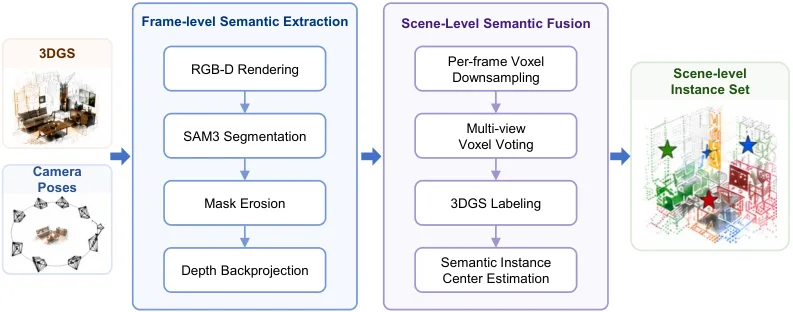

NavArena：从 3D Gaussian Splatting 重建自动构建目标导向导航基准
NavArena: Automated Construction of Goal-Oriented Navigation Benchmarks from 3D Gaussian Splatting Reconstructions
这项工作把新视图渲染资产补成可执行、可评测的导航环境，连接了 3D/4D 表征与具身决策。最值得迁移的是从连续重建中自动推断碰撞/可达性约束，并将语义目标接入统一闭环协议。
作者、单位与技术谱系 · Research context
作者与单位
研究脉络
合作网络
- NavArena 项目与公开资产NavArena authors → benchmark tools/evaluation/assets关系：官方项目与代码/资产发布承诺[arXiv HTML v1]
- 3DGS 表示与导航策略frozen 3DGS scene → closed-loop policy rollout关系：明确技术依赖[论文正文]
作者单位逐名核验仍待补全；未发现可据此推断导师/师生关系的公开合作边。
方法本质拆解 · What actually changed
是不是微调？
论文把 3DGS 作为冻结场景表示，重点是基准生成和评测流程，而不是训练一个新的导航策略。导航策略 rollout 用于诊断协议，不能据此推断 NavArena 对策略参数做了统一微调。
有没有额外约束？
额外约束来自 Gaussian 密度/高度统计构成的 occupancy costmap、碰撞查询、可达性过滤和语义目标候选。它们把渲染空间约束为可执行导航空间。
推理/后端到底做了什么？
运行时由冻结 3DGS 渲染 RGB-D，查询 occupancy costmap，并按目标和闭环动作推进状态。自动任务生成、专家轨迹生成和评测协议是后端基础设施，不是传统全局 BA。
方法本质是什么？
它把每个 Gaussian 的局部几何统计聚合成占据与可达性约束，再把多视图语义提升为三维目标，因而将视觉重建接到导航状态转移。关键改变不是提升渲染质量，而是补齐可执行性和评测闭环。
固定 3DGS + 几何占据/语义提升 + 闭环任务生成，把渲染资产变成可执行导航基准。

桥接价值Bridge
桥接价值
NavArena 的核心桥接是把静态 3DGS 从视觉展示资产变成带碰撞、可达性和目标语义的导航世界。它位于 3D 表征与具身决策之间，适合用来检验地图几何误差是否真正影响策略闭环，而不只比较渲染图像。
方法与模块Method
方法摘要
系统冻结 3DGS 并由相机位姿渲染 egocentric RGB-D 观测，同时依据 Gaussian 密度、高度和体素聚合构造 occupancy costmap。多视图开放词汇 mask 被提升到三维目标候选，随后自动生成任务、专家轨迹并执行闭环导航评测。
可迁移模块
可迁移模块一是从显式/隐式几何估计占据概率、地面和碰撞代价，并把不确定区域保守地纳入规划约束。可迁移模块二是把对象级语义候选与可达性过滤组合成统一任务生成器，用于评测主动感知、object-goal navigation 或地图更新。

证据Evidence
关键证据与数字
官方 HTML 报告 NavArena 在超过 2,000 个场景上生成 22.2 million 条专家轨迹，这是其规模化基准价值的直接证据。论文还将 spatial validity、semantic validity 与闭环 policy rollout 分开评估；具体分项数值和与各导航基线的完整表格需在页面表格中进一步核对，当前记录为待核验。
边界与下一步Limits & Next Step
边界与风险
场景由固定 3DGS 重建派生，动态障碍、重建孔洞和位姿漂移可能使 occupancy 推断与真实机器人不一致。论文的结论主要证明自动生成和诊断价值，并不等价于真实机器人部署性能；碰撞阈值、开放词汇 mask 质量和专家轨迹偏差仍需单独压力测试。
下一步实验
建议在同一场景中注入深度尺度、相机位姿和 Gaussian 密度扰动，测量 occupancy 误差向规划成功率、碰撞率和重定位率的传播。随后用真实 RGB-D/IMU 轨迹替换渲染观测，比较固定地图、在线更新地图和不确定性占据图三种配置。